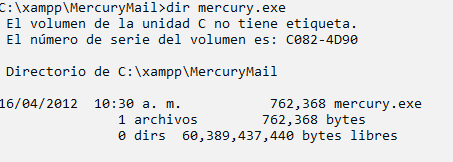
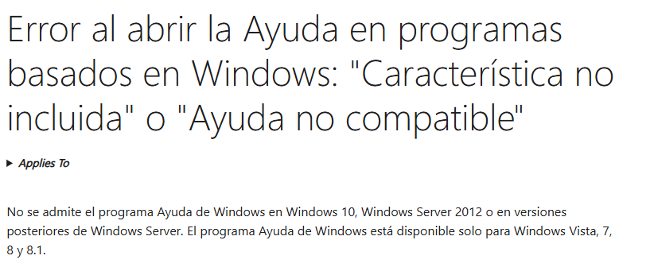
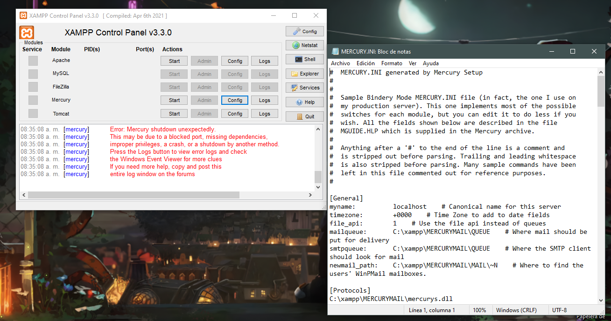
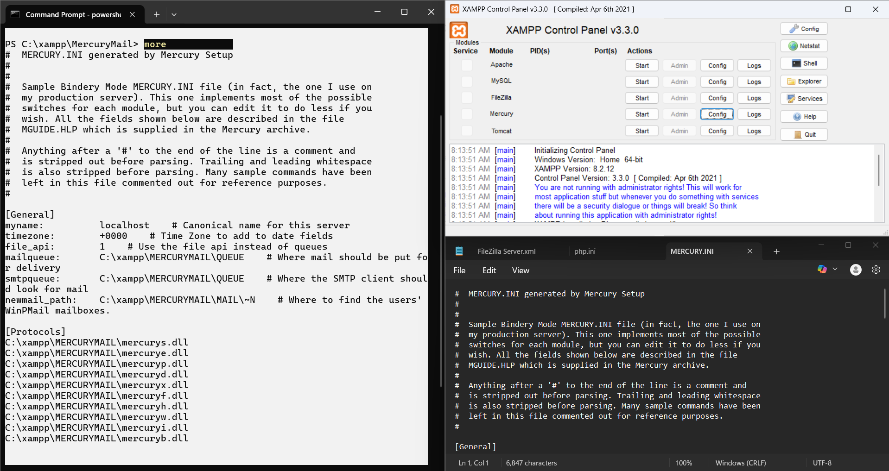
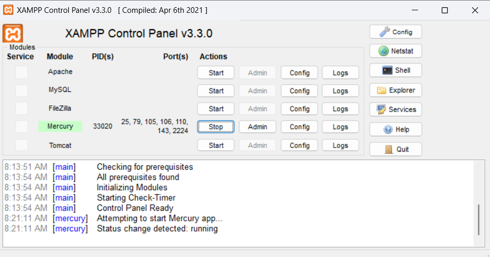
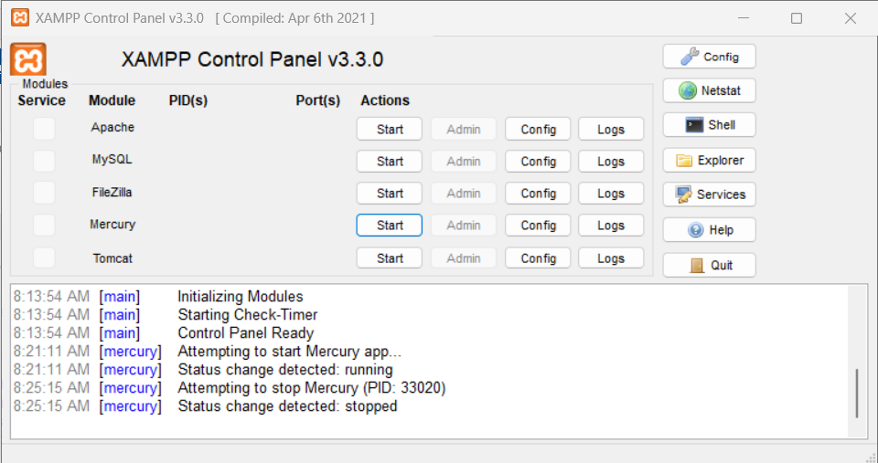
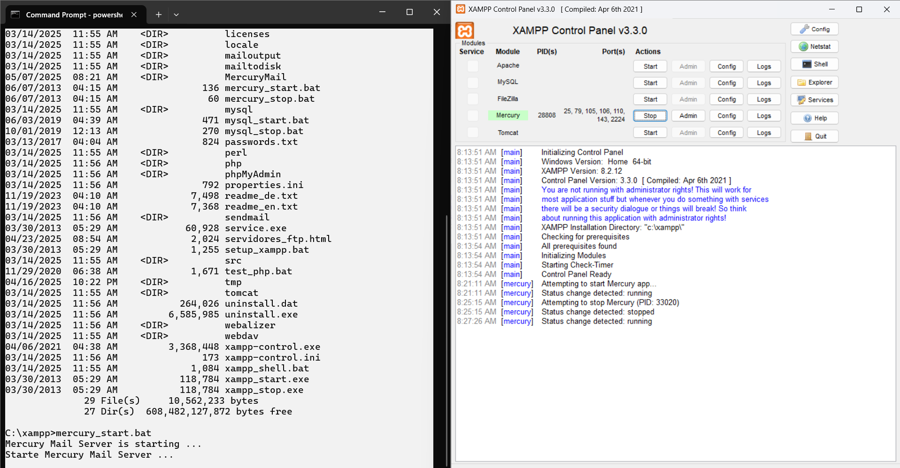
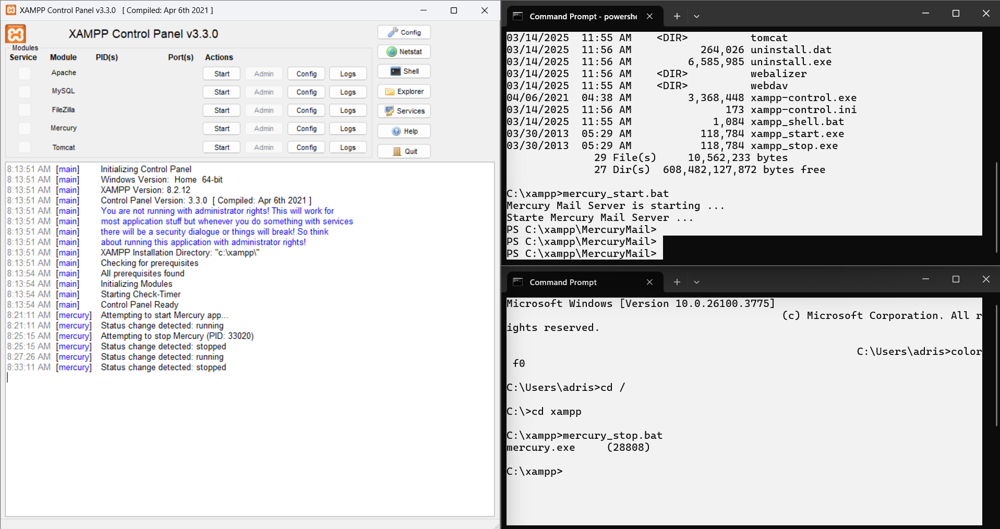

Mercury es un servidor de correo electrónico diseñado para sistemas Windows. Desarrollado por David Harris, permite enviar y recibir correos mediante protocolos como SMTP, POP3 y IMAP. Es usado comúnmente en redes pequeñas o medianas, y se integra fácilmente con clientes como Pegasus Mail para ofrecer una solución completa de correo.
Localización del servidor.
Ayuda del servidor.
Muestre el archivo de configuración de forma grafica.
Muestre e archivo de configuración en PS usando more. comando: more mercury.ini
Inicie el servidor mediante XAMPP
Detenga el servidor mediante XAMPP
Inicie el servidor mediante COMANDO CMD compruebe en interfaz de XAMPP
Detenga el servidor mediante comando CMD compruebe en interfaz de XAMPP
Nota: Es importante cerrar el servidor en otra terminal para que no cierre en rojo, para que no falle XAMPP
